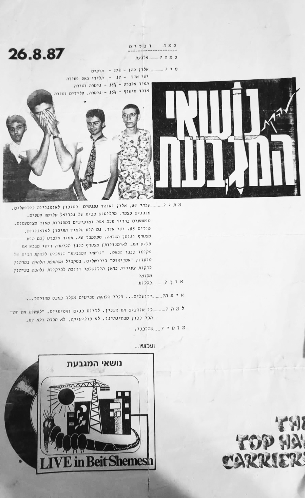

נושאי המגבעת
אדם/קבוצה
נושאי המגבעת היו להקת רוק אלטרנטיבי-גל חדש מירושלים. הוקמה ב־1984 בשם "נושאי המגבעת של קובי אור" (שקוצר במהרה) ע"י אהד פישוף, אלון כהן וישי אדר כשלמדו יחד במחזור הראשון של התיכון לאמנויות בשכונת מוסררה. תמיר אלברט הצטרף אחרי כשנה. בהמשך נשרו רובם מהלימודים וקיימו חזרות בבית הוריו של פישוף במוצא עילית.
הופעתם הראשונה הייתה במועדון "אמדאוס" שלאחר מכן נקרא "האנדרגראונד", ב־1986. ב־1987 הופיעו במרתון להקות בתאטרון החאן, שארגן מפיק מקומי בשם מוטי ג'מייקה שהיה עושה ערבי להקות. בעקבות זאת התפרסמה עליהם ביקורת אוהדת בכתבה של העיתונאי יורם בר על המרתון. מעבר לזאת היו מופיעים לרוב בתיאטרון פרגוד; גבריאל בן־חורין מלהקת ישראל שמע אותם, התעניין והזמין את פישוף להופיע במקום בעת שניהל אותו. באותה שנה המפיק־אמרגן מתל אביב מוטי שהרבני החל לנהל אותם ולארגן הופעות, שכונו "Live in Beit Shemesh", מחוץ לירושלים. בשנה זו הקליטו בהפקה עצמאית קלטת דמו בשם זה.
ב־1988 הקליטו קלטת ראשונה בחברת "האוזן השלישית" שנמכרה בכ־1000 עותקים. הלחנים נכתבו ע"י כולם במשותף, רוב הטקסטים נכתבו ע"י פישוף, למעט "האלוהים שלי עייף", שכתב אמיר זידנר, חבר של פישוף, שנהרג בטנק ממטען צד בדרום לבנון בפברואר 1988. השיר "ביקור בהר" נכתב לזכרו, ובמרץ 1988 הקדישו הופעה לזכרו במועדון "המרתף העליון" בבית לסין. הקלטת "נושאי המגבעת" (שכונתה "הקסטה") הפכה לאלבום קאלט, ויצאה בהוצאה מחודשת ב־2013. סיבוב ההופעות שלהם בתקופה זו נקרא "אל תדאגו בקשר לממשלה".

דף מידע ויחסי ציבור ללהקה מסיבוב ההופעות ב־1987
ב־1989 ישי אדר התגייס ועזב את הלהקה והחליף אותו נגן הבס אדם הורוביץ. בהמשך אותה שנה הצטרף הגיטריסט רם אוריון. ב־1990 הוחתמה הלהקה ב"הד ארצי" ושלומי ברכה (אז חבר משינה) צורף כמפיק המוזיקלי לאלבום "מי רצח את אגנתה פאלסקוג" שיצא בקיץ 1991. אלבום זה הניב מספר להיטים, ביניהם "הבא בתור הוא סוס", "אני טקסט פוליטי", "מתנה לחג" ו"נגד כיוון הזיפים", ופרץ את הדרך אל הקהל הרחב. בעקבותיו יצאה הלהקה לסיבוב הופעות ברחבי הארץ, כולל הופעה בבמה המרכזית בפסטיבל ערד בקיץ 1991. הופעתם האחרונה נערכה במועדון ליקוויד בתל אביב בנובמבר 1991.
בסוף 1991 פרש פישוף מהלהקה בגלל מתחים פנימיים על רקע הכיוון היצירתי והמעבר לסגנון רוק גיטרות מיינסטרימי. עקב כך הופסקה העבודה על אלבום חדש והלהקה התפרקה. אחרי הפרישה התפצלה הלהקה לשני הרכבים. הראשון נקרא הבא בתור הוא כלום וכלל את פישוף, רם אוריון וישי אדר, וקיים מספר הופעות פרידה בהן ביצעו גרסאות אלקטרוניות־תעשיתיות לשירי הלהקה. השני נקרא נושאי המגבעת והקליט עם צביקה פיק את אלבום הקאמבק שלו ויצא איתו לסיבוב הופעות מצליח שנקרא "צביקה פיק ונושאי המגבעת". במהלך הסיבוב הצטרפו גם המתופף של "דורלקס סדלקס" וענבל פרלמוטר והוקלטו גרסאות חדשות לשירים של פיק, שלוש מהן יצאו כסינגלים.
קליפ לסינגל "אני טקסט פוליטי" מ־1989
קריירות של יוצאי הלהקה:
פישוף ואוריון חברים בלהקת הפה והטלפיים ומוציאים תקליט כל שש שנים לפי קוד שקבעו לעצמם, עד עכשיו 5 אלבומים.
פישוף התגורר בלונדון כ־10 שנים ועוסק באמנויות הבמה, בעיקר מחול מודרני. ב־2015 הופיע עם שני שירי נושאי המגבעת ב"נשף רוק 4" שארגן אביב גפן. כמו כן בשנים האחרונות חזר לעסוק במוזיקה ומופיע עם שיריו.
ישי אדר יוצר מוזיקה אלקטרונית ומלחין פסקולים לסרטים. ב־2011 הוציא עם פישוף אלבום תחת השם בני המה. בהופעותיהם מבצעים לפעמים גרסאות אלקטרוניות לשירי נושאי המגבעת.
תמיר אלברט הקים עם אמיר צורף (מנוער שוליים ורוקפור) את הצמד ג'ינג'יות, שהוציאו אלבום אחד שזכה לביקורות חיוביות. זמן קצר לאחר מכן חזר אלברט בתשובה, אך בהמשך יצא בשאלה וחזר להופיע עם שירי הג'ינג'יות ב־2002.
אלון כהן הוציא עם רע מוכיח את האלבום "סליחות" (שילוב מוזיקה אלקטרונית עם הקלטות של סליחות בביצוע חזנים). מאוחר יותר חזר בתשובה.
רם אוריון ניגן עם ערן צור באלבום "עיוור בלב ים" ובהופעותיו. היה סולן להקת בתרי זוזי ואח"כ פתח בקריירת סולו. מדי פעם מפיק אלבומים לאמנים אחרים.
אדם הורוביץ היה חבר בלהקת ריר (עם רן סלוין מ־3ח) שהוציאה אלבום אחד ב־1995, בנוסף כתב ביקורות מוזיקה בעיתונים במחנה והעיר.
פישוף ואוריון חברים בלהקת הפה והטלפיים ומוציאים תקליט כל שש שנים לפי קוד שקבעו לעצמם, עד עכשיו 5 אלבומים.
פישוף התגורר בלונדון כ־10 שנים ועוסק באמנויות הבמה, בעיקר מחול מודרני. ב־2015 הופיע עם שני שירי נושאי המגבעת ב"נשף רוק 4" שארגן אביב גפן. כמו כן בשנים האחרונות חזר לעסוק במוזיקה ומופיע עם שיריו.
ישי אדר יוצר מוזיקה אלקטרונית ומלחין פסקולים לסרטים. ב־2011 הוציא עם פישוף אלבום תחת השם בני המה. בהופעותיהם מבצעים לפעמים גרסאות אלקטרוניות לשירי נושאי המגבעת.
תמיר אלברט הקים עם אמיר צורף (מנוער שוליים ורוקפור) את הצמד ג'ינג'יות, שהוציאו אלבום אחד שזכה לביקורות חיוביות. זמן קצר לאחר מכן חזר אלברט בתשובה, אך בהמשך יצא בשאלה וחזר להופיע עם שירי הג'ינג'יות ב־2002.
אלון כהן הוציא עם רע מוכיח את האלבום "סליחות" (שילוב מוזיקה אלקטרונית עם הקלטות של סליחות בביצוע חזנים). מאוחר יותר חזר בתשובה.
רם אוריון ניגן עם ערן צור באלבום "עיוור בלב ים" ובהופעותיו. היה סולן להקת בתרי זוזי ואח"כ פתח בקריירת סולו. מדי פעם מפיק אלבומים לאמנים אחרים.
אדם הורוביץ היה חבר בלהקת ריר (עם רן סלוין מ־3ח) שהוציאה אלבום אחד ב־1995, בנוסף כתב ביקורות מוזיקה בעיתונים במחנה והעיר.